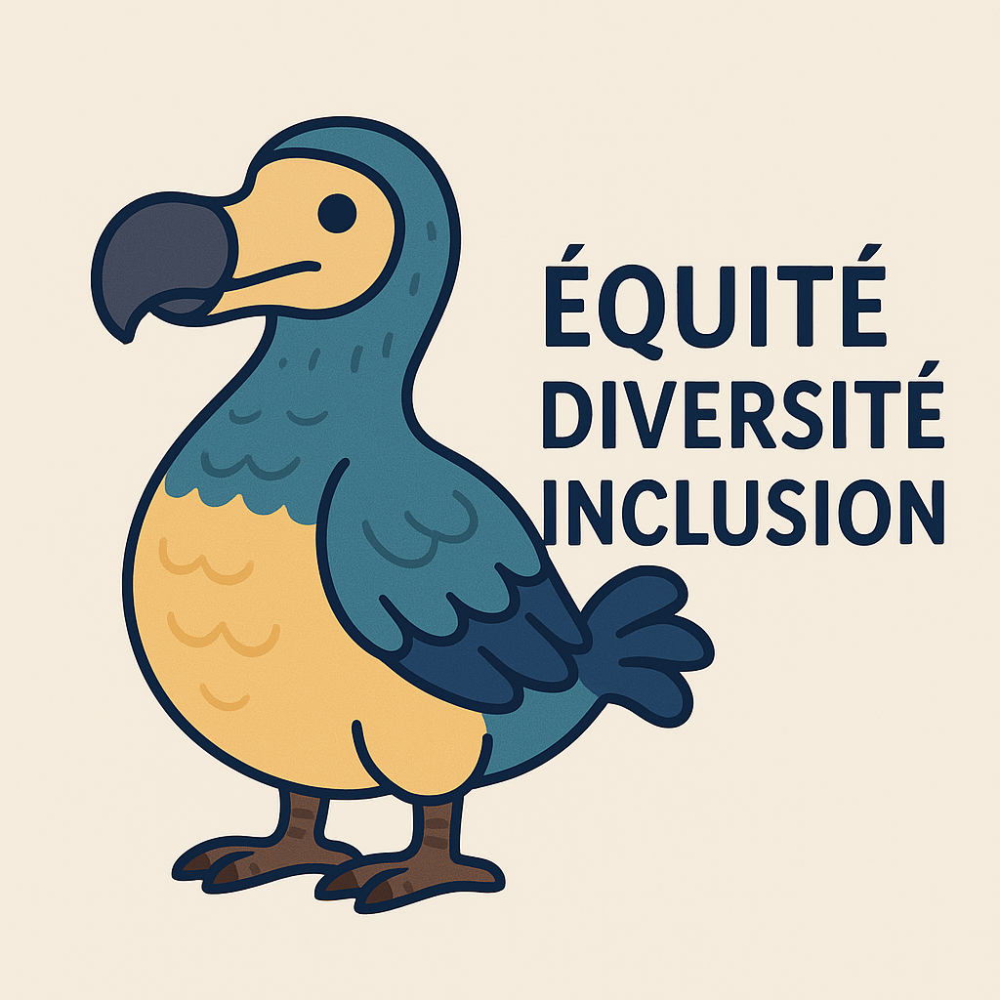

Bienvenue sur EDI Dodo Déterminés
Ce site éducatif vous guidera à travers les défis soulevés par l'équité, la diversité et l'inclusion (EDI). Vous découvrirez ce que sont les EDI et vous apprendrez plus sur les défis qui en sont soulevez. Vous pourrez même faire un petit quiz qui vous permettra d'évaluer vos connaissances et vos choix dans le domaine.
Profitez d’un contenu riche et interactif pour transformer vos méthodes de gestion et intégrer pleinement les valeurs d’EDI.
Concepts EDI
L’Équité, la Diversité et l’Inclusion sont des piliers essentiels pour toute organisation moderne. L’équité consiste à offrir des opportunités adaptées aux besoins spécifiques de chacun. La diversité valorise les différences culturelles, professionnelles et personnelles. Enfin, l’inclusion vise à créer un environnement où chacun se sent accepté et valorisé.
Ces principes, lorsqu'ils sont bien appliqués, améliorent la cohésion des équipes et optimisent la performance globale.
Bonnes Pratiques
Voici quelques recommandations pour intégrer l’EDI dans vos projets :
- Analyser les besoins spécifiques de chaque membre de l’équipe [2].
- Mettre en place des formations sur la sensibilisation aux biais inconscients [2].
- Adopter une communication transparente et inclusive [2].
- Valoriser les retours d’expérience pour améliorer continuellement les pratiques [2].
L’application rigoureuse de ces pratiques favorise un environnement de travail harmonieux et performant.
Défis
L’intégration de l’EDI peut rencontrer divers obstacles :
- Résistance au changement au sein de l’équipe.
- Manque de sensibilisation et de formation sur les enjeux EDI.
- Biais inconscients pouvant influencer les décisions.
- Contraintes budgétaires limitant l’implémentation de certaines initiatives.
Chaque défi peut être surmonté grâce à des stratégies adaptées et une communication efficace.
Jeu Interactif : Chef de Projet Inclusif
Références
Voici quelques références bibliographiques:
Actualités
Restez informé des dernières tendances et innovations en matière d’EDI. Découvrez des études de cas, interviews d’experts et articles de fond qui analysent l’impact des initiatives EDI dans différents secteurs [4].
Nos actualités sont mises à jour régulièrement pour refléter les évolutions du terrain.
À propos
EDI Dodo Déterminés est un projet éducatif dédié à la promotion des valeurs d’Équité, Diversité et Inclusion. Notre mission est de fournir des ressources de qualité pour aider les organisations à intégrer ces principes dans leurs pratiques quotidiennes [5].
Pour toute question ou suggestion, n'hésitez pas à nous contacter.